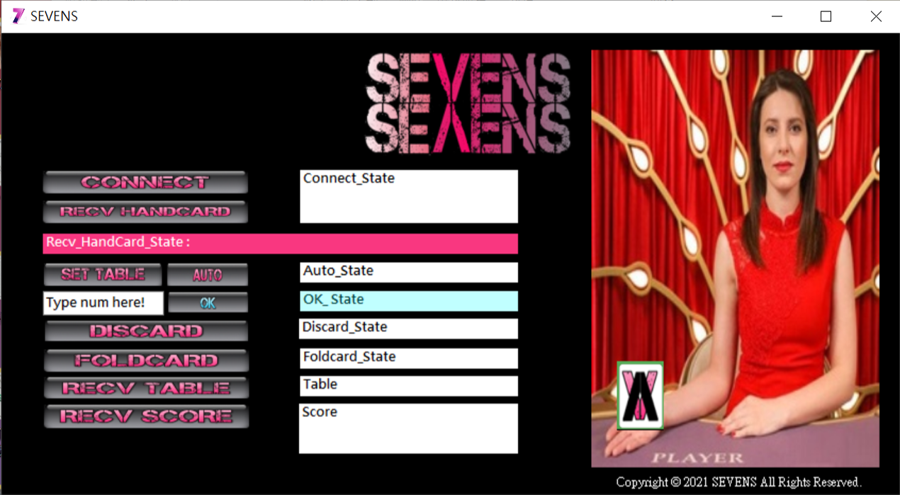
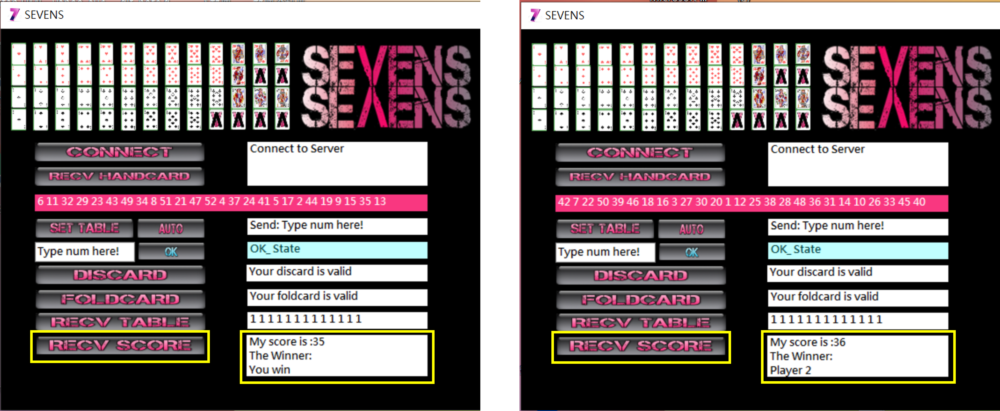

C++/C# 作品:
一、牌七-撲克牌桌遊
Server端:
使用C++撰寫Server端程式。
使用Socket與Client端進行連線。
使用Multi-Process管理Client端之玩家。
Client端:
使用C#撰寫Client端程式。
Button功能說明:
1.Connect:透過TCP Socket與Server端連線。
2.Recv Handcard:從Server端獲取手牌。
3.Set Table:顯示牌桌，初始化為撲克牌之背面。
4.Discard:判斷可出牌時，玩家手動進行出牌。
5.Foldcard:判斷不可出牌，需蓋牌時，玩家手動進行蓋牌。
6.Auto:電腦自動模擬出牌或蓋牌，直到52張牌出完為止，遊戲結束。
7.Recv Score:從Server端獲取本次遊戲的結果，顯示蓋牌分數與遊戲贏家。
牌七Sevens 演示影片:
牌七SEVENS-遊戲開始畫面 :

1.Connect 按鈕 : 透過TCP Socket與Server端連線。

2.Recv Handcard 按鈕 : 從Server端獲取手牌。

3.Set Table 按鈕 : 顯示牌桌，初始化為撲克牌之背面。

4.Auto 按鈕 : 電腦自動模擬出牌或蓋牌，直到52張牌出完為止，遊戲結束。

5.Recv Score 按鈕 : 從Server端獲取本次遊戲的結果，顯示蓋牌分數與遊戲贏家。(此例為左方玩家Player 2獲勝，蓋牌之失分較小，為35分)

回上一頁 回到頁首